La portada de la app es a la vez un mapa del programa, un laboratorio donde puedes ver cómo k-means y un dendrograma agrupan los mismos puntos, un catálogo de los tipos de datos y los métodos, y un curso breve de teoría en trece lecciones. Este capítulo la recorre de arriba abajo y propone cinco prácticas con el demo.
Al abrir index.html aparece el Bloque 1. Se lee como un folleto, de arriba abajo: primero qué hace el programa, luego cómo se recorre, después el demo para experimentar, los tipos de datos y los métodos, la teoría, una tabla para elegir método y, al final, cómo citarlo. La figura 1.1 del capítulo anterior muestra la parte superior; la tabla 2.1 enumera todas las secciones en el orden en que aparecen.
| Sección en la app | Qué contiene | Para qué te sirve |
|---|---|---|
| Presentación cuatro botones y cuatro garantías | Start with my data →, Try the live demo, Read the theory y How to cite; a la derecha, una ilustración con un dendrograma y un mapa de grupos. | Ir directo a cargar datos o a una sección de la portada. |
| How it works | Los seis pasos de un análisis, del archivo al artículo (figura 2.1 y tabla 2.2). | Ubicar cada bloque en la lógica de un estudio. |
| Try it: k-means and a dendrogram on the same points | El demo interactivo (sección 2.2). | Entender, jugando, qué hace cada familia de métodos y por qué se equivoca. |
| What's inside | Una tarjeta por bloque, con ilustración y descripción (figura 1.6). | Saltar a un bloque con un clic. |
| Every kind of data | Siete tipos de tabla y los coeficientes que convienen a cada uno (sección 2.3). | Confirmar que tus datos caben en el programa. |
| Methods covered | Galería de quince métodos en cuatro familias (sección 2.3). | Ver de un vistazo todo lo que se puede calcular. |
| Clustering, explained without the fog | Trece lecciones desplegables con figuras (sección 2.4). | Repasar la teoría antes de interpretar o defender resultados. |
| Which method should I use? | Tabla de elección por tipo de datos (sección 2.5). | Tener un punto de partida razonable. |
| Why ClusteringPro y Glossary at a glance | Seis argumentos y veintinueve términos clave en fichas. | Justificar el uso del programa y reconocer el vocabulario. |
| How to cite ClusteringPro | La referencia lista para copiar en formato APA o BibTeX (sección 2.6). | Citar correctamente en tu artículo o tesis. |
| Go to Block 2: load your data → | El botón de cierre. | Empezar el análisis. |
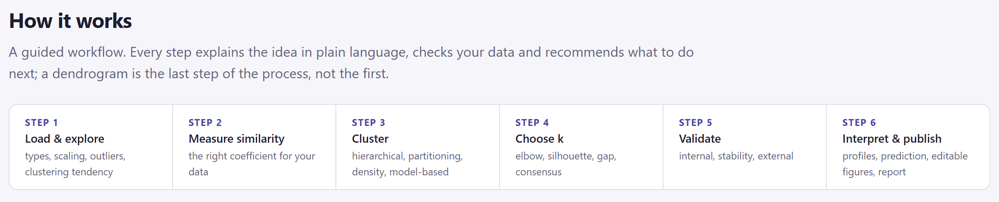
| Paso | En la app | Qué se hace | Bloques |
|---|---|---|---|
| 1 | Load & explore | Tipificar las columnas, escalar, revisar atípicos y medir la tendencia al agrupamiento. | 2 |
| 2 | Measure similarity | Elegir el coeficiente que corresponde a los datos y calcular la matriz. | 3 |
| 3 | Cluster | Construir el árbol o la partición: jerárquico, particionamiento, densidad o mezclas. | 4 5 |
| 4 | Choose k | Decidir cuántos grupos conservar con el codo, la silueta, el gap y el consenso de índices. | 6 |
| 5 | Validate | Validación interna, estabilidad por remuestreo y comparación con grupos conocidos. | 6 |
| 6 | Interpret & publish | Perfiles de los grupos, predicción de casos nuevos, figuras editables e informe. | 7 8 |
Los botones de la presentación te llevan a la sección correspondiente de la misma portada, salvo Start with my data →, que abre el Bloque 2. Las tarjetas de What's inside abren su bloque; si aún no cargaste datos, cualquier tarjeta del 3 en adelante te lleva primero al Bloque 2, porque todos los bloques leen de ahí. Para volver a la portada desde cualquier parte, pulsa el nombre del programa arriba a la izquierda o el botón 1 Home de la barra.
El demo toma un conjunto de puntos en dos dimensiones y lo agrupa de las dos maneras clásicas al mismo tiempo. A la izquierda, k-means mueve sus centros paso a paso; a la derecha, un dendrograma real, calculado con el mismo motor que usa el Bloque 4, se recalcula con cada cambio de regla de enlace y se corta en k grupos. No es una animación decorativa: los números de la línea de resultados son los mismos que verás en los bloques de análisis.
k-means parte de k centros y repite dos pasos hasta que nada cambia: asigna cada punto al centro más cercano y mueve cada centro al promedio de sus puntos. Busca grupos redondos y de tamaño parecido, y necesita k de antemano. El agrupamiento jerárquico no fija k: empieza con cada punto en su propio grupo y une, una y otra vez, los dos grupos más cercanos hasta que queda uno solo. El resultado es un árbol, y cortarlo a una altura produce una partición. Qué significa "más cercanos" lo decide la regla de enlace, y ahí está la gracia del demo: con los mismos puntos, cada regla dibuja un árbol distinto.
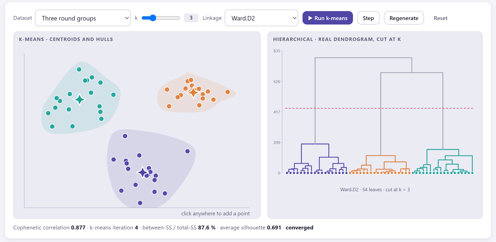
1 2 3 4 5 6 7 8| Control | Qué hace |
|---|---|
| Dataset | Cambia el conjunto de puntos. Cada conjunto se genera con la misma semilla, así que al elegirlo verás exactamente los puntos de este manual. |
| k | Fija el número de grupos. Si ya corriste k-means, se reinicia con el nuevo k; el corte del árbol se mueve a la altura que separa k ramas. |
| Linkage | Ocho reglas: simple, completa, promedio (UPGMA), ponderada (WPGMA), centroide, mediana, Ward.D y Ward.D2. Solo afecta al árbol. |
| ▶ Run k-means | Coloca k centros al azar y repite las iteraciones hasta converger, una cada 0.4 s. |
| Step | Una sola iteración: útil para ver cómo se reasignan los puntos y se desplazan los centros. |
| Regenerate | Sortea otro conjunto de puntos del mismo tipo (otra semilla). Los números cambiarán. |
| Reset | Quita los grupos de k-means y deja los puntos en gris; el árbol no cambia. |
| Clic en el panel izquierdo | Añade un punto donde hagas clic (hasta 150). El árbol se recalcula y los grupos de k-means se borran para que vuelvas a correrlo. |
| Conjunto | Puntos | Forma | Lo que muestra |
|---|---|---|---|
| Three round groups | 54 | Tres nubes redondas bien separadas. | El caso ideal: todos los métodos coinciden. |
| Four groups | 60 | Cuatro nubes en las esquinas. | Cómo cambian los índices al pasar de k = 3 a k = 4. |
| Elongated groups | 58 | Dos nubes alargadas y una redonda. | k-means corta las nubes alargadas; el árbol no. |
| Two moons | 60 | Dos medias lunas entrelazadas. | Formas curvas: solo el enlace simple las recupera. |
| Ring + core | 64 | Un anillo con un núcleo dentro. | Un grupo dentro de otro: k-means no puede. |
| Uniform noise (no structure) | 55 | Puntos al azar, sin grupos. | Los algoritmos devuelven grupos aunque no existan. |
Debajo de los dos paneles, una línea resume el estado del demo. Son cuatro números que volverás a encontrar en los Bloques 4, 5 y 6, así que conviene aprender a leerlos aquí.
| En la app | Qué mide | Cómo leerlo |
|---|---|---|
| Cophenetic correlation | Correlación entre las distancias originales y las alturas a las que el árbol une cada par de puntos. | Por encima de 0.75 el árbol resume bien las distancias. Cambia con el enlace, no con k. |
| k-means iteration | Cuántas veces se reasignaron los puntos y se movieron los centros. | Pocas iteraciones con grupos claros; muchas cuando los grupos se traslapan. |
| between-SS / total-SS | Porcentaje de la variación total que queda explicado por las diferencias entre grupos. | Siempre sube al aumentar k; sirve para buscar el codo, no el máximo. |
| average silhouette | Promedio de la silueta de todos los puntos (sección 1.9). | 0.7 o más, estructura fuerte; 0.5, razonable; menos de 0.25, dudosa. |
| converged | Aparece cuando una iteración ya no cambia nada. | Hasta entonces la partición es provisional. |
Los puntos de cada conjunto y los centros iniciales de k-means se sortean con una semilla fija. Mientras no pulses Regenerate obtendrás exactamente los valores de las prácticas siguientes. Después de regenerar, las cifras cambian pero las conclusiones se mantienen.
| k | Iteraciones | SS entre / total | Silueta media |
|---|---|---|---|
| 2 | 3 | 33.1 % | 0.398 |
| 3 | 4 | 87.6 % | 0.691 |
| 4 | 3 | 88.7 % | 0.553 |
| Enlace | Cofenética | Enlace | Cofenética |
|---|---|---|---|
| Single | 0.800 | Centroid | 0.877 |
| Complete | 0.869 | Median | 0.855 |
| Average (UPGMA) | 0.883 | Ward.D | 0.864 |
| Weighted (WPGMA) | 0.862 | Ward.D2 | 0.877 |
La suma de cuadrados entre grupos siempre crece con k: pasar de 2 a 3 grupos la dispara del 33 al 88 %, pero pasar de 3 a 4 apenas la mueve. Ese cambio brusco de pendiente es el codo. La silueta, en cambio, tiene un máximo claro en k = 3, porque con 4 grupos una nube se parte en dos mitades que están más cerca entre sí que de cualquier otra cosa. Y con grupos tan nítidos, los ocho enlaces dan árboles muy fieles a las distancias (cofenética de 0.80 a 0.88; el promedio, UPGMA, es el más alto, como suele ocurrir) y todos, salvo el simple, separan las tres nubes al cortar en 3. Los Bloques 4 y 6 hacen este mismo razonamiento con tus datos y con trece criterios en lugar de dos.
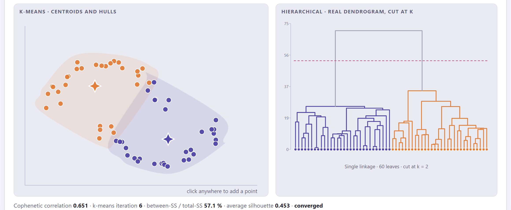
| Método | ARI con las lunas | Cofenética | Silueta media |
|---|---|---|---|
| k-means | 0.391 | — | 0.453 |
| Árbol, enlace simple, corte en 2 | 1.000 | 0.651 | — |
| Árbol, UPGMA, corte en 2 | 0.312 | 0.751 | — |
| Árbol, Ward.D2, corte en 2 | 0.312 | 0.739 | — |
El enlace simple es el único que recupera las lunas y, sin embargo, tiene la cofenética más baja (0.651 frente a 0.751 de UPGMA). La cofenética mide qué tan bien el árbol reproduce las distancias entre pares, no si los grupos son los verdaderos. Del mismo modo, la silueta de k-means (0.453) no es despreciable aunque la partición sea absurda: la silueta premia grupos compactos y redondos. Con formas curvas o alargadas, mira siempre la figura antes que el índice.
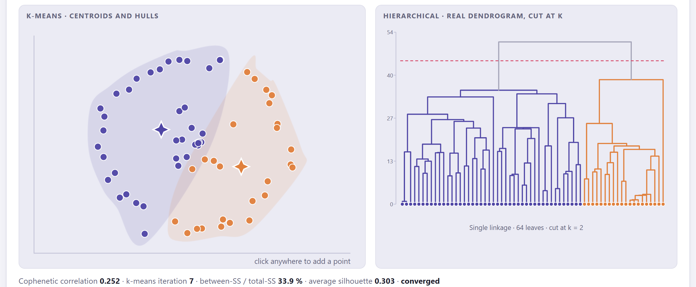
Un grupo dentro de otro no tiene "centro" propio: el centro del anillo cae en el núcleo. Por eso ninguna regla que trabaje con centros o con promedios de distancias puede separarlos, y solo el enlace simple, que une vecinos inmediatos, encadena los puntos del anillo entre sí. En el Bloque 5 encontrarás dos métodos hechos para estas formas: DBSCAN, que agrupa por densidad y además reconoce el ruido, y el agrupamiento espectral, que usa el grafo de vecinos más cercanos. La regla práctica es: si tu mapa de puntos muestra formas curvas, anilladas o alargadas, no confíes en k-means ni en Ward.
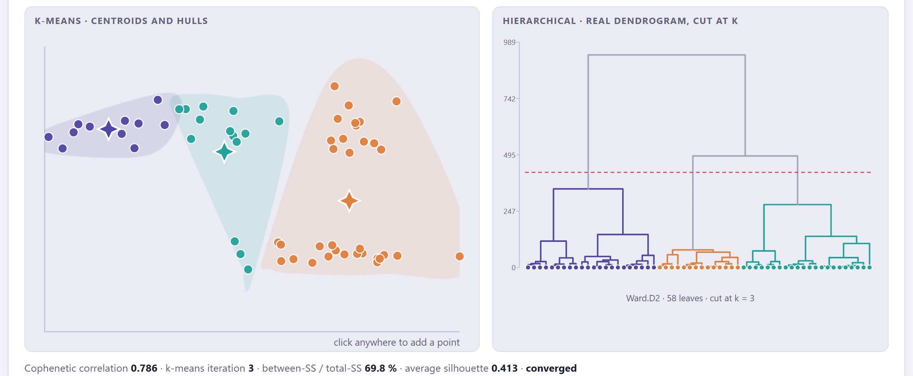
k-means solo garantiza llegar a un mínimo local de la suma de cuadrados: el resultado depende de los centros iniciales, y con grupos alargados o de tamaños distintos un mal arranque produce una partición mala que aun así "converge". Por eso el Bloque 5 usa por defecto el arranque inteligente k-means++ y repite el algoritmo con muchos inicios (nstart) quedándose con el mejor, y ofrece el k-means jerárquico, que toma los centros de un árbol de Ward. En el demo no hay repeticiones a propósito, para que veas el problema.
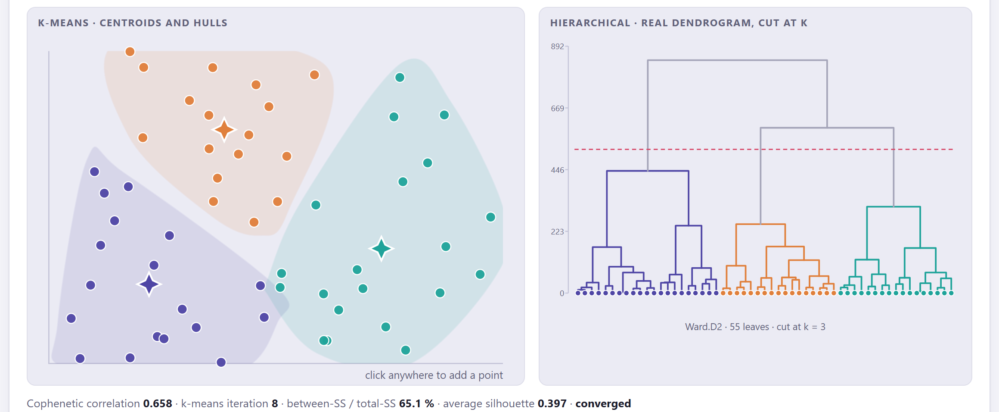
Todo algoritmo de agrupamiento devuelve grupos, aunque no existan. Los índices ayudan poco: la silueta de 0.40 del ruido no está lejos de la 0.45 de las dos lunas, y el codo de la suma de cuadrados es suave pero visible. La única defensa es preguntar antes de agrupar si los datos tienen estructura, y para eso el Bloque 2 calcula el estadístico de Hopkins con su valor P frente a datos uniformes y dibuja la imagen VAT de la matriz de distancias. Un Hopkins cercano a 0.5 significa "no hay nada que encontrar", y esa es una conclusión legítima.
Pruébalo tú. Con cualquier conjunto, haz clic en un rincón vacío del panel izquierdo para añadir un punto aislado y cambia el enlace a Single: el punto nuevo queda como un grupo de uno y todos los demás se funden en el otro, porque el enlace simple aísla a los atípicos antes que a nada. Vuelve a Ward.D2 y el punto se incorpora a la nube más cercana. Con k-means, corre el algoritmo y observa cómo el punto arrastra hacia sí el centro de su grupo. Es la razón por la que el Bloque 2 detecta los atípicos multivariados antes de agrupar.
Las dos secciones siguientes de la portada son catálogos. La primera responde a "¿mis datos sirven?" y la segunda a "¿qué se puede calcular?". Ninguna tiene controles: son tarjetas para leer.
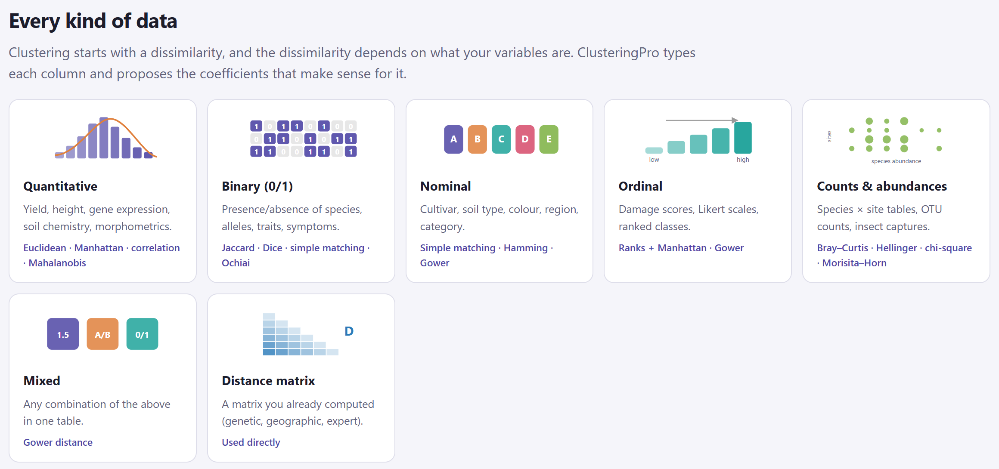
| Tipo | Ejemplos | Coeficientes propuestos | Bloques |
|---|---|---|---|
| Quantitative | Rendimiento, altura, expresión génica, química del suelo, morfometría. | Euclidiana, Manhattan, correlación, Mahalanobis. | 3 5 |
| Binary (0/1) | Presencia o ausencia de especies, alelos, rasgos, síntomas. | Jaccard, Dice, apareamiento simple, Ochiai. | 3 |
| Nominal | Cultivar, tipo de suelo, color, región, categoría. | Apareamiento simple, Hamming, Gower. | 3 |
| Ordinal | Escalas de daño, escalas de Likert, clases ordenadas. | Rangos + Manhattan, Gower. | 3 |
| Counts & abundances | Tablas de especies × sitios, recuentos de OTU, capturas de insectos. | Bray–Curtis, Hellinger, ji cuadrada, Morisita–Horn. | 2 3 |
| Mixed | Cualquier combinación de los anteriores en una tabla. | Distancia de Gower. | 3 5 |
| Distance matrix | Una matriz ya calculada: genética, geográfica, de expertos. | Se usa tal cual. | 2 |
| Familia | Tarjeta | Qué es | Bloque |
|---|---|---|---|
| Hierarchical jerárquico | Agglomerative | Fusiones de abajo hacia arriba con ocho reglas de enlace. | 4 |
| Divisive (DIANA) | Divisiones de arriba hacia abajo. | 4 | |
| Tree comparison | Tanglegrama, entrelazamiento y γ de Baker entre dos árboles. | 4 | |
| Clustered heat map | Mapa de calor con filas y columnas ordenadas por sus árboles. | 4 | |
| Partitioning particionamiento | k-means | Centroides; algoritmos de Hartigan–Wong, Lloyd y MacQueen; arranque k-means++. | 5 |
| k-medoids (PAM) | Centros que son observaciones reales; acepta cualquier distancia. | 5 | |
| CLARA | PAM sobre muestras repetidas, para miles de filas. | 5 | |
| Fuzzy c-means | Grados de pertenencia en lugar de etiquetas. | 5 | |
| Advanced avanzado | Model-based | Mezclas gaussianas ajustadas por EM; el BIC elige el modelo. | 5 |
| DBSCAN | Agrupamiento por densidad: cualquier forma, con ruido. | 5 | |
| Hierarchical k-means | El árbol aporta los centros iniciales de k-means. | 5 | |
| Validation validación | Clustering tendency | Estadístico de Hopkins e imagen VAT. | 2 |
| Optimal number of clusters | Codo, silueta, gap y el consenso de índices. | 6 | |
| Validation | Silueta, Dunn, estabilidad por remuestreo, ARI. | 6 | |
| Supervised follow-up | Análisis discriminante y clasificación de observaciones nuevas. | 7 |
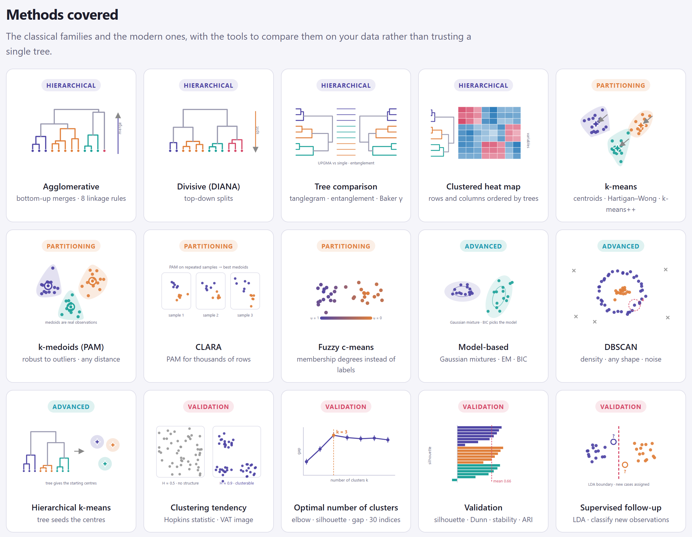
La sección Clustering, explained without the fog es un curso breve de análisis de agrupamientos en trece lecciones desplegables, cada una con una o dos figuras. Está en inglés, como el resto de la app. No hace falta leerlas en orden ni todas de una vez: cada bloque de análisis repite, en su tarjeta de teoría, la parte que importa en ese paso. Esta sección las presenta y reúne las reglas prácticas que enuncian, para que las tengas en español.
| N.º | Lección en la app | Qué responde | Se aplica en |
|---|---|---|---|
| 1 | What is a cluster, and what is clustering? | Qué es un grupo (compacidad y separación), qué es "no supervisado" y cuáles son las cuatro familias de métodos. | todos |
| 2 | Before clustering: are my data clusterable at all? | Hopkins, VAT, vista previa por componentes, correlaciones, atípicos y faltantes. | 2 |
| 3 | Similarity, dissimilarity and distance | Los coeficientes para variables cuantitativas, binarias, nominales, mixtas y ecológicas; el problema del doble cero. | 3 |
| 4 | Standardisation: putting variables on the same footing | Cuándo estandarizar (z, rango, robusto, logaritmo, Hellinger) y cuándo no. | 2 |
| 5 | Hierarchical clustering and linkage rules | Aglomerativo y divisivo; las ocho reglas de enlace; cofenética y coeficiente aglomerativo; Ward.D frente a Ward.D2. | 4 |
| 6 | Reading (and drawing) a dendrogram | Altura de las uniones, el orden arbitrario de las hojas, el corte y lo que la app dibuja. | 4 |
| 7 | Comparing dendrograms | Tanglegrama y entrelazamiento, cofenética entre árboles, γ de Baker, índice de Fowlkes–Mallows. | 4 |
| 8 | Partitioning: k-means, PAM, CLARA and fuzzy clustering | Cómo funciona k-means y sus variantes, los medoides, CLARA, la pertenencia difusa y los límites de k-means. | 5 |
| 9 | Density-based and model-based clustering | DBSCAN (ε, minPts, ruido) y las mezclas gaussianas con EM y BIC. | 5 |
| 10 | How many clusters? | Codo, silueta, gap, Calinski–Harabasz, Davies–Bouldin, Dunn y el consenso; BIC para mezclas, la rodilla para DBSCAN. | 6 |
| 11 | Validating clusters | Validación interna, estabilidad por remuestreo, valores AU y BP, validación externa y comparación de algoritmos. | 6 |
| 12 | From clusters to meaning: profiles, indicators and supervised follow-up | Perfiles, pruebas v, ANOVA, especies indicadoras, análisis discriminante, árbol de clasificación y asignación de casos nuevos. | 7 |
| 13 | Pitfalls checklist | Lo que sí y lo que no hay que hacer antes de publicar (tabla 2.12). | 8 |
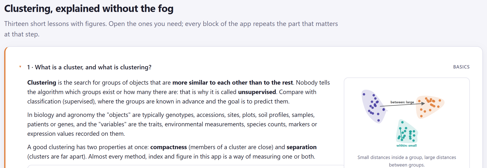
Las lecciones son ricas en umbrales y advertencias. Los siguientes recuadros reúnen los que más se usan; cada uno vuelve a aparecer, con más detalle, en el capítulo del bloque correspondiente.
| Medida | Umbrales y lectura | Lección |
|---|---|---|
| Hopkins | Cerca de 0.5 los datos parecen uniformes; por debajo de 0.75 sé cauto; por encima de 0.9 hay estructura clara. | 2 |
| Objetos por grupo | Al menos 5 a 10 objetos por cada grupo que esperes. Muchas variables están bien, siempre que todas sean pertinentes. | 2 |
| Correlación cofenética | Por encima de 0.75 el árbol es un resumen fiel de las distancias. El coeficiente aglomerativo crece con el tamaño de la muestra: compáralo solo entre árboles de los mismos datos. | 5 |
| Gap | Elige el menor k cuyo gap esté a un error estándar del máximo. | 10 |
| Silueta media | 0.7 o más, estructura fuerte; 0.5, razonable; menos de 0.25, no hay estructura sustancial. Una silueta negativa señala un objeto probablemente mal asignado. | 11 |
| Estabilidad de Jaccard | Por encima de 0.75 un grupo es estable; por debajo de 0.5 es dudoso. | 11 |
| Sí | No |
|---|---|
| Comprueba primero la tendencia al agrupamiento (Hopkins, VAT). | Leer el orden izquierda–derecha del dendrograma como proximidad. |
| Empareja el coeficiente con el tipo de dato; usa coeficientes asimétricos para presencia/ausencia y abundancias. | Usar Ward o k-means sobre distancias no euclidianas (Bray–Curtis, Gower) sin transformar. |
| Estandariza cuando las unidades difieren, y dilo en los métodos. | Dejar que una variable en unidades grandes decida los grupos. |
| Prueba varios enlaces y algoritmos y compáralos (tanglegrama, cofenética, ARI). | Tomar como respuesta una sola corrida de k-means con un solo arranque. |
| Elige k con varios criterios y repórtalos todos. | Usar coeficientes de doble cero (apareamiento simple) en tablas de especies. |
| Reporta la silueta y una medida de estabilidad con cada partición. | Probar diferencias entre grupos con ANOVA sobre las mismas variables que los construyeron y llamar al resultado "significativo". |
| Describe cada grupo en términos de las variables. | Presentar un árbol sin su cofenética o un corte sin su silueta. |
La sección Which method should I use? condensa las lecciones en una tabla de ocho filas: según cómo sean tus datos, qué disimilitud usar, qué método probar primero, cuál después y con qué validar. Es un punto de partida, no una regla, y el Bloque 2 hace esta misma recomendación automáticamente en cuanto tipifica tus columnas.
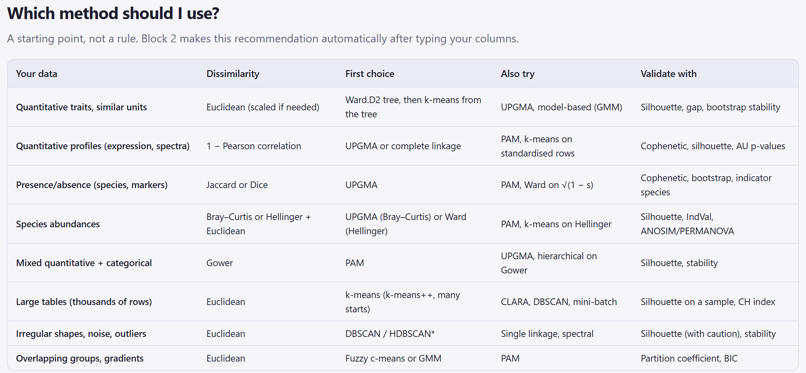
| Tus datos | Disimilitud | Primera opción | Prueba también | Valida con |
|---|---|---|---|---|
| Rasgos cuantitativos, unidades parecidas | Euclidiana (escalada si hace falta) | Árbol de Ward.D2 y luego k-means sembrado con el árbol | UPGMA, mezclas gaussianas | Silueta, gap, estabilidad por remuestreo |
| Perfiles cuantitativos (expresión, espectros) | 1 − correlación de Pearson | UPGMA o enlace completo | PAM, k-means sobre filas estandarizadas | Cofenética, silueta, valores AU |
| Presencia/ausencia (especies, marcadores) | Jaccard o Dice | UPGMA | PAM, Ward sobre √(1 − s) | Cofenética, remuestreo, especies indicadoras |
| Abundancias de especies | Bray–Curtis, o Hellinger + euclidiana | UPGMA (Bray–Curtis) o Ward (Hellinger) | PAM, k-means sobre Hellinger | Silueta, IndVal, ANOSIM/PERMANOVA |
| Mezcla de cuantitativas y categóricas | Gower | PAM | UPGMA, jerárquico sobre Gower | Silueta, estabilidad |
| Tablas grandes (miles de filas) | Euclidiana | k-means (k-means++, muchos arranques) | CLARA, DBSCAN | Silueta sobre una muestra, índice CH |
| Formas irregulares, ruido, atípicos | Euclidiana | DBSCAN | Enlace simple, espectral | Silueta (con cautela), estabilidad |
| Grupos traslapados, gradientes | Euclidiana | Fuzzy c-means o mezclas gaussianas | PAM | Coeficiente de partición, BIC |
Busca la fila que más se parezca a tu tabla de datos y lleva sus tres columnas centrales a los Bloques 3, 4 y 5. Si tus datos caen en dos filas (por ejemplo, abundancias con miles de sitios), la disimilitud la decide la naturaleza de las variables y el algoritmo la decide el tamaño. Cuando el Bloque 2 haya tipificado tus columnas, compara su tarjeta What to do next con esta tabla: casi siempre coinciden, y cuando no, la tarjeta explica por qué.
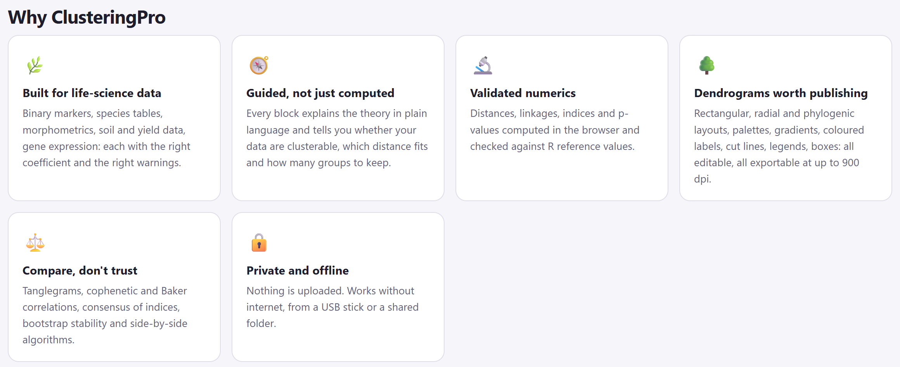
Las seis tarjetas de Why ClusteringPro resumen lo que distingue al programa: está hecho para datos de ciencias de la vida, con el coeficiente y las advertencias apropiadas para cada tipo; guía además de calcular; sus cálculos se han verificado contra valores de referencia; sus dendrogramas son publicables y editables hasta 900 puntos por pulgada; compara en lugar de confiar en un solo árbol; y trabaja sin conexión, sin subir nada. Debajo, Glossary at a glance muestra en fichas los veintinueve términos que más se repiten en la app, agrupados por familia: los del agrupamiento jerárquico, los del particionamiento y los de la exploración y validación. El apéndice A los define todos en español.
Si ClusteringPro te ayudó en una tesis, un artículo o un informe, cítalo: así se sabe con qué herramienta y versión se hicieron los cálculos, y así el programa puede seguir siendo gratuito. La sección How to cite ClusteringPro, al final de la portada, tiene la referencia lista para copiar.
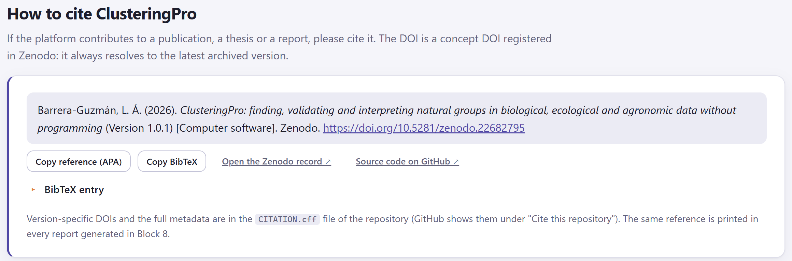
1 2 3 4 5El identificador de la cita, 10.5281/zenodo.22682795, es el DOI de concepto: lleva siempre a la versión más reciente del programa. Cada versión tiene además su propio DOI, visible en su registro del archivo (el de la 1.0.1 es 10.5281/zenodo.22682889). Cita el de concepto junto con el número de versión; si la revista exige que cualquiera pueda recuperar exactamente la versión que usaste, cita el de esa versión. Los DOI de cada versión y los metadatos completos están en el archivo CITATION.cff del repositorio, que GitHub muestra bajo Cite this repository.
Una cita del programa no basta para que otro investigador repita tu análisis. Indica en los métodos la versión de ClusteringPro, el coeficiente de disimilitud, el escalado, la regla de enlace o el algoritmo con sus parámetros, el número de grupos y los criterios con que lo elegiste, el número de remuestreos y la semilla aleatoria. El párrafo de métodos que redacta el Bloque 8 contiene todo eso con los valores que realmente usaste.
Con la portada, el demo y la teoría a la mano, el siguiente paso es cargar tus propios datos. El capítulo del Bloque 2 explica los formatos que acepta la app, cómo tipifica cada columna y qué papel puede tener, el tratamiento de faltantes, transformaciones y escalado, y la pregunta que hay que responder antes de agrupar: si los datos son agrupables.